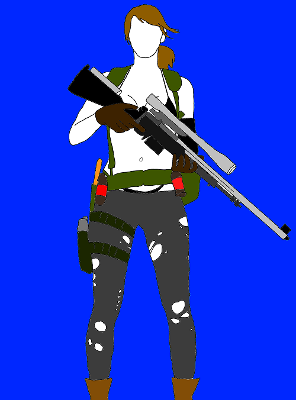

So this picture portraits the character in one of my favorite games named "The Female Sniper - Quiet" or simply "Quiet" Created with Medibang Paint Android.
Quiet is one of the most helpful AI character I have encountered in most games so far. You can command her to take out enemy forces in one single swoop. You can also equip her with lethal or non-lethal weapons depends on how you will play the game.
Quiet, known to the Soviet forces as Tixij (Russian: Тихий, "Quiet"), was a female assassin during the 1980s. Originally an assassin for XOF, Quiet later defected to Diamond Dogs after being defeated by Venom Snake. Quiet wore a minimal amount of clothing at all times because she could only breathe through her skin following parasite-treatment due to the serious injuries she had sustained while trying to kill Big Boss during the hospital raid; wearing too much clothing would lead to suffocation.
After being defeated by Venom Snake in Afghanistan following a tense sniper duel, Quiet became a prisoner at Mother Base until she was allowed to accompany Venom Snake on missions as a buddy. Her weapons included two lethal sniper rifles nicknamed Wicked Butterfly and Sinful Butterfly as well as the non-lethal Guilty Butterfly.